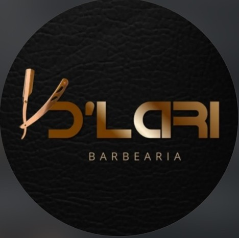
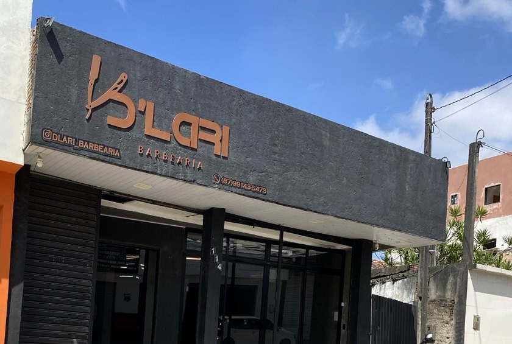

D'Lari Barbearia
Experiência de agendamento online e gestão | Protótipo responsivo

Design e tecnologia para a experiência do clienteIdentidade em preto e cobre, navegação fluida e visão integrada do negócio.

Ambiente demonstrativo: os preços e serviços exibidos no protótipo são ilustrativos. Os agendamentos e lançamentos de teste ficam armazenados apenas neste navegador, sem sincronização com a barbearia e sem pagamento online.
O que é
Protótipo de portal da D'Lari Barbearia, em Garanhuns (PE), que reúne apresentação institucional, serviços e agendamento guiado em uma experiência adaptada a celulares e computadores. Também apresenta um painel de gestão demonstrativo para explorar a operação do estabelecimento.
Pontos fortes
- Interface responsiva com identidade visual em preto, cobre e tons quentes
- Agendamento em etapas: serviço, profissional, data, horário e dados do cliente
- Apresentação de serviços, equipe, espaço e canais de contato
- Área demonstrativa com visão geral e agenda de atendimentos
- Dashboard ilustrativo com movimentação e resumo financeiro
- Simulação de lançamentos financeiros e acompanhamento de atendimentos
- Dados de demonstração guardados localmente no navegador, sem backend de produção